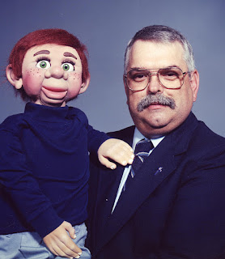

Aging dummy
3/2/2012
Question:
* * * * *
From Mr. D: Changing the wig to a gray or "salt and pepper" is easy enough. But I'm thinking the head should also be repainted so I can eliminate the freckles and paint in a few "aging" lines. Maybe we could fit him with eyeglasses as well. With a change of wardrobe, and if he has no objection, we could add decades to his appearance overnight. (Maybe not overnight,,,but within a few days. :-)
{kind=link}

I been wanting to do something with my Dummy for a few years. What would it take for you to turn him older....little gray...you sold him to me 13 years ago. Emmitt* * * * *
From Mr. D: Changing the wig to a gray or "salt and pepper" is easy enough. But I'm thinking the head should also be repainted so I can eliminate the freckles and paint in a few "aging" lines. Maybe we could fit him with eyeglasses as well. With a change of wardrobe, and if he has no objection, we could add decades to his appearance overnight. (Maybe not overnight,,,but within a few days. :-)